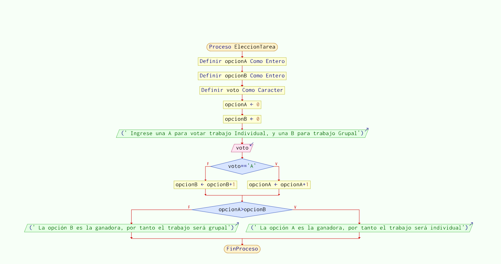
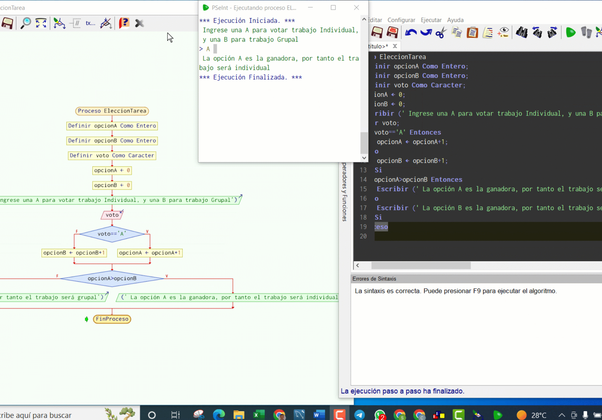
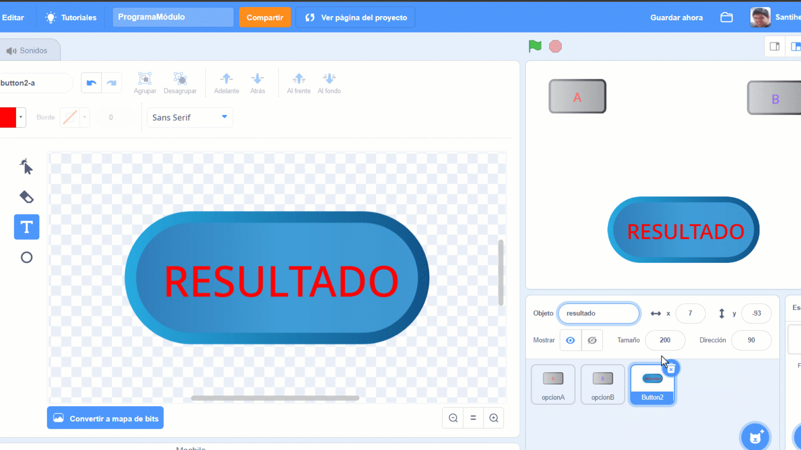
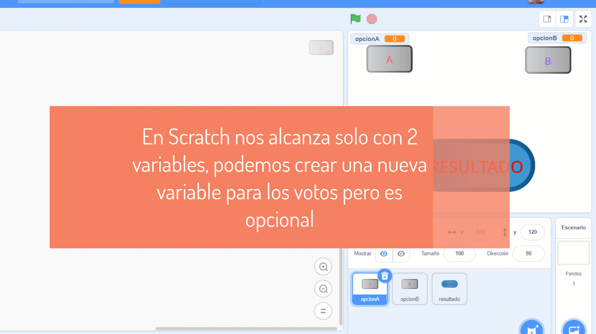
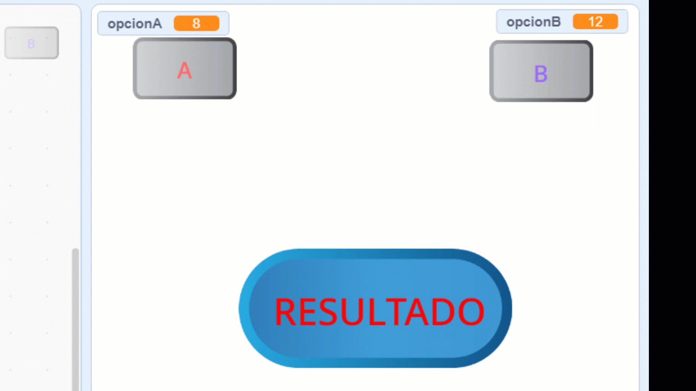
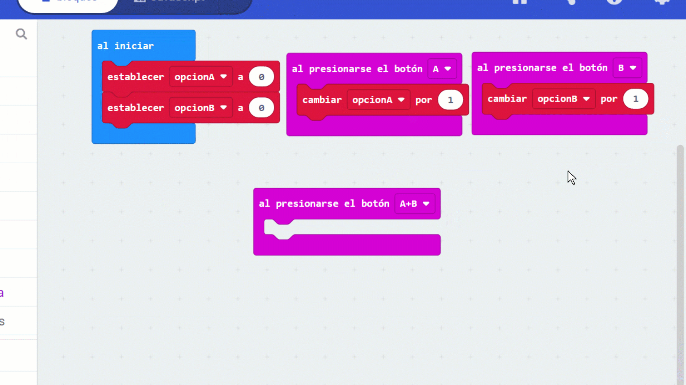
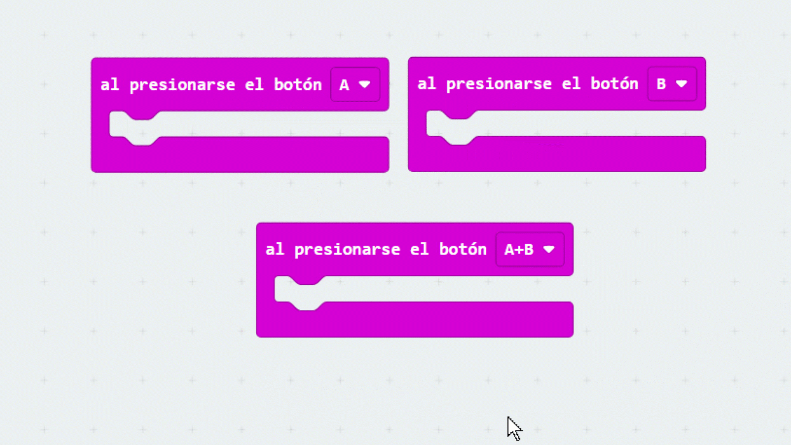
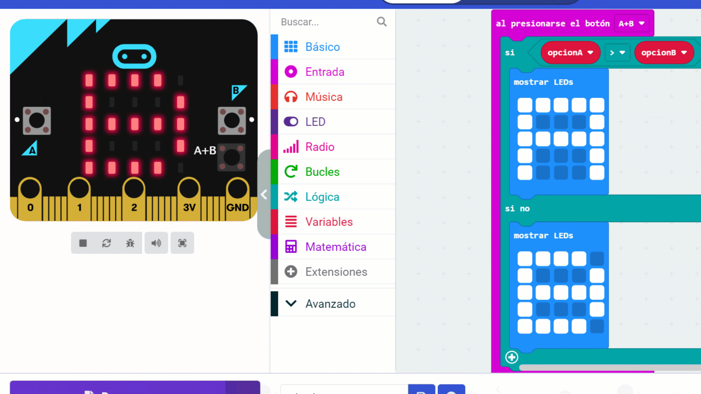

Pensamiento computacional
Descomponer problemas, reconocer patrones, abstraer lo esencial y diseñar algoritmos secuenciales, selectivos e iterativos.
Un espacio interactivo, progresivo y situado que integra los fundamentos del pensamiento computacional, el análisis de problemas cotidianos, la programación por bloques, la computación física y el paso a la programación textual.
SI votosA > votosB ENTONCES
MOSTRAR "Gana Opción A"
SINO
MOSTRAR "Gana Opción B"
Alineado con el marco curricular de Ciencias de la Computación, la metodología activa privilegia el Aprendizaje Basado en Problemas (ABP), el pensamiento crítico y el error constructivo mediante la depuración (debugging).
Descomponer problemas, reconocer patrones, abstraer lo esencial y diseñar algoritmos secuenciales, selectivos e iterativos.
Comenzar con la lógica pura en pseudocódigo y bloques visuales (Scratch, MakeCode) y transitar hacia la programación textual (Python, JavaScript).
Manipular hardware tangible (micro:bit con botones y matriz de LEDs) y experimentar cómo el software dialoga con el mundo real.
Transcripción del profesor: "Con el apoyo de este recurso el estudiante podrá iniciar su camino en el mundo de la programación. Se parte de una base teórica, con demostraciones específicas sobre un problema determinado y luego se plantea una extensión del problema inicial donde es requerido aplicar lo aprendido en la fase inicial."
El pensamiento computacional no consiste en pensar como una máquina, sino en aprender a formular problemas y diseñar soluciones para que puedan ser ejecutadas por un procesador de información (Wing, 2011; Bocconi et al., 2017).
Dividir un problema grande o complejo en partes más pequeñas y manejables.
Identificar similitudes, repeticiones y regularidades entre diferentes situaciones.
Centrarse en la información relevante e ignorar los detalles accesorios o innecesarios.
Diseñar un conjunto de pasos ordenados, finitos y sin ambigüedades para resolver el problema.
El algoritmo es la estrategia conceptual; el programa es la traducción a un lenguaje que el computador ejecuta.
El proceso sistemático de buscar, aislar y corregir errores cuando el resultado obtenido difiere del esperado.
Aprender Ciencias de la Computación no es memorizar la sintaxis de un lenguaje particular, sino desarrollar la capacidad analítica para estructurar ideas lógicas, anticipar comportamientos y resolver problemas con creatividad y rigor ético.
A lo largo de la historia, las herramientas computacionales evolucionaron para dar respuesta a necesidades humanas. Visibilizar los aportes de mujeres y hombres es fundamental para desmantelar estereotipos de género en la tecnología (ANEP / DUA).
Escribió y publicó el primer algoritmo destinado a ser procesado por una máquina (la Máquina Analítica de Charles Babbage). Vio que las computadoras podían manipular no solo números, sino cualquier entidad representada mediante símbolos (como la música o las imágenes).
Las seis programadoras de la ENIAC (Kay McNulty, Betty Jennings, Betty Snyder, Marlyn Wescoff, Fran Bilas y Ruth Lichterman) crearon las bases de la programación práctica. Años más tarde, Grace Hopper diseñó el primer compilador y popularizó el término bug y la necesidad de lenguajes comprensibles por personas (origen de COBOL).
En el MIT, Papert creó la filosofía del construccionismo: los estudiantes aprenden mejor cuando construyen objetos significativos. Con la tortuga de Logo, introdujo a las infancias en la geometría y la algoritmia manipulable, antecedente directo de la robótica educativa y Scratch.
Guido van Rossum creó Python con el foco en la legibilidad y simplicidad sintáctica. Brendan Eich creó JavaScript para dotar de vida interactiva a la Web. Ambos se convirtieron en estándares globales de desarrollo y educación.
El Lifelong Kindergarten del MIT lanzó Scratch, revolucionando la enseñanza mediante bloques visuales encajables. Con la llegada de placas como micro:bit (Ceibal) y herramientas de aprendizaje automático (Teachable Machine), programar hoy abarca desde el software hasta el hardware físico y la IA.
A partir de una situación cotidiana escolar, modelamos y construimos una solución integral en cuatro tecnologías diferentes: pseudocódigo, Scratch, micro:bit y programación textual.
Un docente le da a elegir a su clase entre dos modalidades para realizar una tarea evaluativa: Opción A: Trabajo Individual o Opción B: Trabajo Grupal. Para ordenar la discusión y garantizar un proceso democrático y transparente, se propone construir un programa informático que registre los votos de cada estudiante y determine cuál es la opción ganadora.
Resumen facilitado:
opcionA y opcionB) inicializadas en 0 que actuarán como acumuladores.
opcionA = opcionA + 1) y una estructura condicional selectiva (SI opcionA > opcionB ENTONCES...).
El pseudocódigo permite planificar y comprender la estructura lógica de la solución sin preocuparse todavía por la sintaxis estricta de un lenguaje de programación específico.
Algoritmo VotacionClase
// Paso 1: Definición e inicialización de variables
Definir opcionA, opcionB Como Entero
Definir voto Como Caracter
opcionA <- 0 // Acumulador de votos para Trabajo Individual
opcionB <- 0 // Acumulador de votos para Trabajo Grupal
// Paso 2: Entrada de datos
Escribir "Ingresar voto: digite 'A' para Individual o 'B' para Grupal:"
Leer voto
// Paso 3: Estructura selectiva para contar el voto
Si Mayusculas(voto) = "A" Entonces
opcionA <- opcionA + 1
Sino
Si Mayusculas(voto) = "B" Entonces
opcionB <- opcionB + 1
Sino
Escribir "Voto inválido: no suma puntos."
FinSi
FinSi
// Paso 4: Comparación final para determinar el resultado
Si opcionA > opcionB Entonces
Escribir "La opción ganadora es la A (Trabajo Individual)"
Sino
Si opcionB > opcionA Entonces
Escribir "La opción ganadora es la B (Trabajo Grupal)"
Sino
Escribir "¡Empate! Ambas opciones obtuvieron la misma cantidad de votos."
FinSi
FinSi
FinAlgoritmo

En Scratch, la votación cobra vida mediante objetos interactivos (sprites) en el escenario: dos botones para votar y un botón central para calcular el resultado final.


opcionA y opcionB, marcadas para ser visibles en pantalla durante la votación.

Aplicar el pensamiento computacional al mundo tangible permite experimentar la interacción entre el código y los sensores físicos de la placa micro:bit de Ceibal (Valverde et al., 2015).


opcionA; al pulsar el botón B se incrementa opcionB.

El programa de 8° y 9° EBI promueve la transición desde lenguajes de bloques hacia lenguajes textuales (Python y JavaScript), comprendiendo estructuras equivalentes, funciones modulares y desarrollo web accesible.
Grabación técnica del Prof. Santiago Hernández mostrando la interacción por terminal, entrada de datos y depuración paso a paso.
Demostración práctica de cómo el mismo algoritmo se conecta a una interfaz web interactiva con HTML, CSS y eventos en JavaScript.
# Módulo de Votación Democrática en Python (8° y 9° EBI)
def registrar_votacion(alumnos_totales=25):
votos_a = 0
votos_b = 0
print(f"--- INICIO DE VOTACIÓN ({alumnos_totales} estudiantes) ---")
for i in range(1, alumnos_totales + 1):
voto = input(f"Estudiante #{i}: ¿Vota por A (Individual) o B (Grupal)? ").strip().upper()
if voto == "A":
votos_a += 1
elif voto == "B":
votos_b += 1
else:
print("Entrada no válida; voto registrado como en blanco.")
return votos_a, votos_b
def determinar_ganador(a, b):
print("\n--- RESULTADO FINAL ---")
print(f"Votos Opción A (Individual): {a}")
print(f"Votos Opción B (Grupal): {b}")
if a > b:
return "¡Ganó la Opción A! Se trabajará de forma Individual."
elif b > a:
return "¡Ganó la Opción B! Se trabajará de forma Grupal."
else:
return "¡Empate exacto! Se requiere una ronda de desempate."
# Ejecución principal
if __name__ == "__main__":
v_a, v_b = registrar_votacion(alumnos_totales=5)
resultado = determinar_ganador(v_a, v_b)
print(resultado)// Módulo de Votación en JavaScript para Entornos Web (9° EBI)
const estadoVotacion = {
votosA: 0,
votosB: 0,
historial: []
};
// Función modular con parámetros
function votar(opcion) {
if (opcion === 'A') {
estadoVotacion.votosA++;
} else if (opcion === 'B') {
estadoVotacion.votosB++;
}
estadoVotacion.historial.push({
opcion: opcion,
fecha: new Date().toISOString()
});
actualizarPantalla();
}
function calcularGanador(a, b) {
if (a > b) return { ganador: 'A', mensaje: 'Gana Trabajo Individual' };
if (b > a) return { ganador: 'B', mensaje: 'Gana Trabajo Grupal' };
return { ganador: 'EMPATE', mensaje: 'Empate exacto de votos' };
}
// Conexión con eventos del DOM
document.getElementById('btn-votar-a').addEventListener('click', () => votar('A'));
document.getElementById('btn-votar-b').addEventListener('click', () => votar('B'));
document.getElementById('btn-resultado').addEventListener('click', () => {
const res = calcularGanador(estadoVotacion.votosA, estadoVotacion.votosB);
alert(`Resultado: ${res.mensaje}`);
});Probá en vivo cómo cambian las variables en memoria, cómo se evalúan las condiciones y cómo responde cada nivel educativo del programa de Ciencias de la Computación.
Nivel 7° EBI: Estructura selectiva básica si-sino simple. Cada clic incrementa el acumulador.
Nivel 8° EBI: Estructura anidada con detección inteligente de empate y tope de alumnos de la clase.
Nivel 9° EBI: Llamada modular a función de orden superior calcularGanador(a, b) con registro de datos estructurados.
Variable en memoria: opcionA
Variable en memoria: opcionB
// 1. Inicialización en memoria: opcionA = 0; opcionB = 0;
// 2. Al pulsar A: opcionA <- opcionA + 1
// 3. Al pulsar B: opcionB <- opcionB + 1
// 4. Evaluación: SI opcionA > opcionB ENTONCES gana A SINO SI opcionB > opcionA ENTONCES gana B SINO EmpateDeslizá la temperatura y observá cómo la computadora bifurca el flujo de ejecución evaluando una expresión lógica booleana.
25 es menor que 30: no se cumple la condición, se ejecuta la alternativa "sino".
LEER temperatura
SI temperatura >= 30 ENTONCES
MOSTRAR "Llevá agua extra y protector"
SINO
MOSTRAR "Hidratate normalmente"
FIN SIEl resaltado verde indica qué rama del árbol de decisiones está activa según la entrada.
A medida que los estudiantes avanzan de grado, los problemas requieren mayor estructura: anidación de condicionales, bucles repetitivos, modularización mediante funciones, bases de datos y reflexión sobre IA y ciudadanía digital.
El problema del empate: Un condicional simple SI-SINO solo contempla dos caminos. Si los votos son iguales (ej.: 10 a 10), el programa diría erróneamente que ganó la opción B. Para solucionarlo, se requiere un condicional anidado:
SI votosA > votosB ENTONCES
MOSTRAR "Ganó Opción A"
SINO
SI votosB > votosA ENTONCES
MOSTRAR "Ganó Opción B"
SINO
MOSTRAR "¡Empate exacto!"
FIN SI
FIN SIBucles repetitivos: En vez de copiar el código 25 veces para 25 alumnos, usamos un bucle PARA i = 1 HASTA 25 HACER o un bucle MIENTRAS no_termino HACER.
Una función es un bloque de código reutilizable con un nombre descriptivo. Puede recibir datos de entrada (parámetros) y producir un dato de salida (retorno).
// Definición modular
function calcularGanador(votosA, votosB) {
if (votosA > votosB) return "A";
if (votosB > votosA) return "B";
return "EMPATE";
}
// Invocación limpia
let resultado = calcularGanador(14, 11);
console.log("El ganador es: " + resultado); // "El ganador es: A"Ventajas pedagógicas: Facilita la división de tareas en equipo (desarrollo colaborativo), simplifica la depuración y evita duplicar código.
Probar software no es solo hacer clic al azar; implica diseñar casos de prueba que desafíen los límites del sistema:
> en vez de >=, o no contemplar el empate).Pruebas de frontera: Probar con 0 votos, con 1 voto de diferencia, con empate y con valores inesperados (como letras en campos numéricos).
En el simulador, al recargar la página los votos vuelven a 0 porque están en la memoria volátil (RAM). Para que un sistema sea útil en el mundo real, los datos deben guardarse en una base de datos:
id_voto (entero único), opcion (caracter), marca_tiempo (fecha/hora).¿Cómo se diferencia un algoritmo tradicional de un modelo de IA?
si votosA > votosB).Sesgos algorítmicos y ética: Si un modelo de IA se entrena con datos históricos sesgados o incompletos, reproducirá y amplificará injusticias. Por ello, en Ciencias de la Computación se fomenta una mirada crítica sobre la procedencia de los datos y el rol ético de quien crea tecnología (UNESCO, 2021).
En concordancia con las pautas de AGESIC y la Ley 18.331 de Uruguay:
Seis preguntas estratégicas que abarcan desde los conceptos iniciales hasta la lógica de desempate, modularidad y ciudadanía digital. Podés reintentar sin penalización; el objetivo es afianzar tu comprensión metacognitiva.
Este recurso está diseñado para funcionar en la web abierta y también como un paquete SCORM 1.2 autocontenido listo para ser integrado en la plataforma CREA (Schoology de Ceibal).
Al presionar el botón inferior se genera un archivo ZIP que contiene el manifiesto normativo imsmanifest.xml, los estilos, videos MP4, audios DUA y scripts de comunicación con la libreta de calificaciones de CREA.
Hacé clic en el botón de descarga para obtener el paquete comprimido SCORM 1.2 en tu computadora.
En tu curso de CREA (Ceibal), seleccioná Agregar Contenido → Agregar archivo / enlace / herramienta externa → Paquete SCORM.
CREA reconocerá el estándar SCORM 1.2; el cuestionario formativo registrará el avance y calificación en la libreta docente.
modulo-programacion-edytic).index.html, la carpeta assets/ y el archivo .nojekyll).https://tu-usuario.github.io/modulo-programacion-edytic/) accesible para todos tus estudiantes.Autor del recurso: Prof. Esp. Santiago Hernández.
Espacio de desarrollo: EDyTIC · Recursos educativos abiertos para Ciencias de la Computación.
Marco curricular: Programas de Ciencias de la Computación de 7°, 8° y 9° Educación Básica Integrada (EBI) - ANEP / DGES / Ceibal (Uruguay).
Este recurso fue desarrollado por el autor integrando herramientas de inteligencia artificial como asistentes técnicos para tareas de prototipado web, formateo accesible, optimización de medios y empaquetado SCORM. Las decisiones pedagógicas, la fundamentación didáctica, la selección de contenidos, los audios, videos y la alineación curricular con los programas de ANEP son de autoría y validación del Prof. Esp. Santiago Hernández.
Este recurso se distribuye bajo una licencia Creative Commons Atribución-NoComercial-CompartirIgual 4.0 Internacional (CC BY-NC-SA 4.0).
Se permite compartir, copiar, distribuir y adaptar la obra siempre que se cite la autoría original, no se haga un uso comercial y se distribuya bajo la misma licencia.
votos = votos + 1).si-sino).